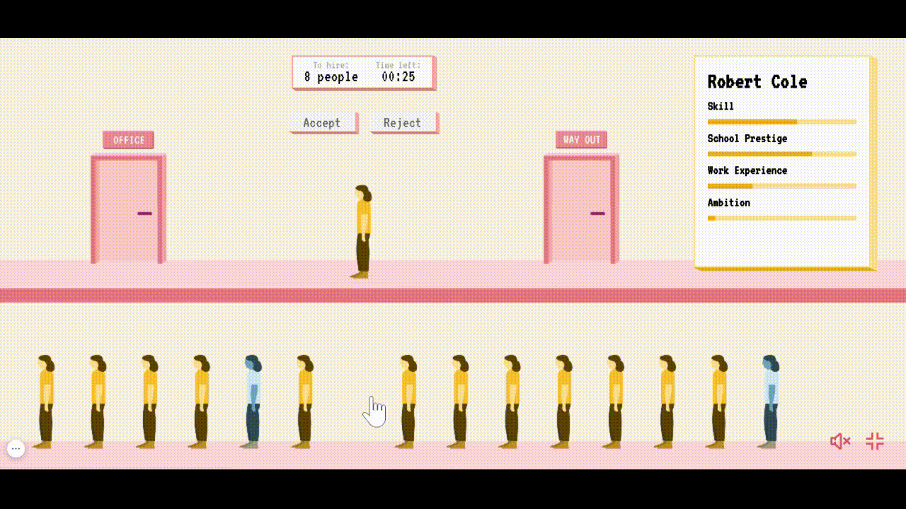
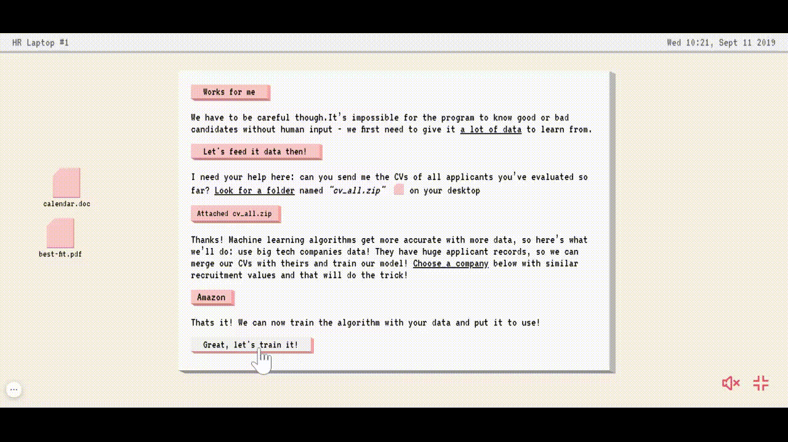
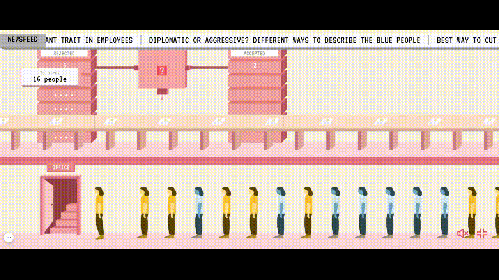

Click the candidates to see their CVs
待录用：
10 人
剩余时间：
00:00
阶段反馈
回复邮件
回复：候选人投诉
Peter Hoffman, Orange Ventures
Re: investment in Bestfit
Reply:
From: software-engineer@bestfit.com
Subject: Hiring Algorithm
你问我们如何能更快招聘。所以我们用机器学习构建了一个招聘算法。基本上，我们会教电脑像你一样招聘，但速度要快得多！
首先，算法会读取过去申请者的简历以及他们是否被录用。然后它会通过模仿你的招聘决策过程来学习什么使候选人优秀或不合格！
没有人类输入，程序不可能知道候选人的好坏——我们首先需要给它大量数据来学习。
我需要你的帮助：你能把你目前评估过的所有申请者的简历发给我吗？点击桌面上名为"cv_all.zip"的文件
谢谢！机器学习算法随着数据增多会变得更准确，所以我们要这样做：使用大型科技公司的数据。他们有大量的申请者记录，所以我们可以将我们的简历与他们的合并，训练我们的模型！ 选择一家你认为招聘聪明人的公司。
就这样！我们现在可以用大量过去的数据训练算法并投入使用！
calendar.doc
cv_all.zip
best-fit.pdf
From: software-engineer@bestfit.com
Subject: Hiring Algorithm
我们正在试图弄清楚算法出了什么问题。
在这里；你怎么看？
Accepted Orange/Blue Makeup
Rejected Orange/Blue Makeup
Average Orange Person Performance
Average Blue Person Performance
让我们找出原因！你还记得我们最初是如何训练算法的吗？
看看我们手动招聘的数据：
Accepted Orange/Blue Makeup
Rejected Orange/Blue Makeup
Average Orange Person Performance
Average Blue Person Performance
我们也应该检查你发给我的大公司数据集的质量！我怎么能理解招聘决策？我是软件工程师！
calendar.doc
cv_all.zip
best-fit.pdf

作为招聘人员，你最看重以下哪些特质？
这是一个简化的模拟，但我们希望它能让你思考。现在想象一下，对于现实生活中的招聘人员来说，做出选择是多么困难！<br>
当存在许多未知因素时，人们往往依赖直觉，而这正是他们偏见和先入为主观念的体现。<br>
你可能没有有意识地歧视，但在公司成立初期，你收到了更多高素质的橙色申请者。未知因素和有偏见的环境会使善意的决策产生偏见。这是行业需要认识到的。<br>
当工程团队联系你时，他们向你索要<b>你的</b>决策，在<b>cv_all.zip</b>中，因为机器学习（ML）算法需要人类输入。<br>

这意味着如果你有偏见，软件会复制它们！但如果你尽可能客观呢？<br>
仅靠你的数据不足以构建机器学习算法，因为机器学习只适用于大量数据。这就是为什么软件工程师要求你选择一个更大的数据集。问题是，所有数据集都是由倾向于有偏见的人构建的。<br>
在这种情况下，它主要由来自橙谷的申请者组成，那里历史上有更多人被允许从事技术工作。<br>
我们可以忽视种族或性别吗？<br>
机器学习算法上没有按钮，输入数据往往难以消除偏见。虽然申请者不会在简历上明确写明种族或性别，但它们往往通过某些人口统计数据通常所属的学院、社区和组织体现出来。<br>

当一个程序从多年的数据中学习时，我们需要质疑它正在学习的数据。仅仅因为一个决策被呈现为"自动化"并不意味着它是正确或客观的。<br>
你的创业公司 Bestfit 今天可能失败了，但我们的社会没有理由失败！前往我们的网站了解更多信息。我们希望它能让你讨论和提问。<br>
Hey there this is some text
Hire me!
This experience works only in landscape mode